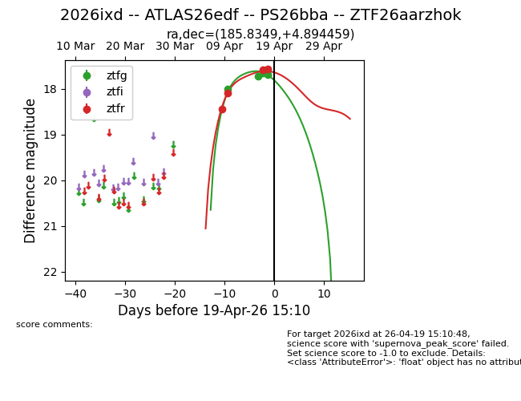
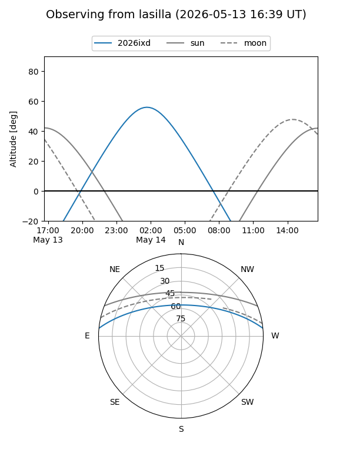
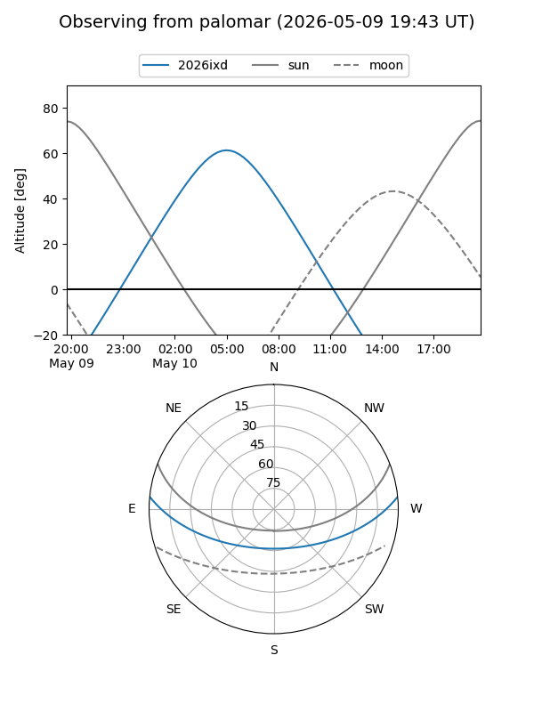
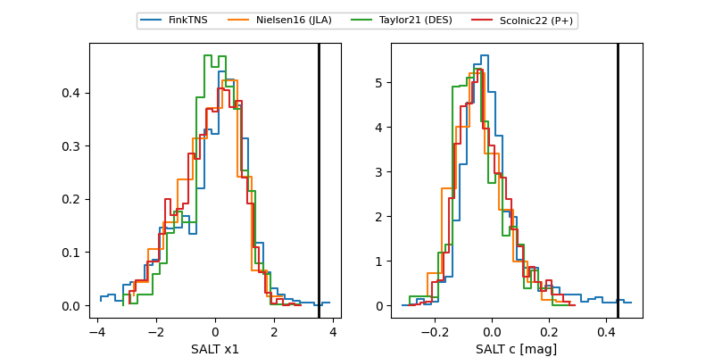

2026ixd
Target 2026ixd at 2026-04-19 15:23
Aliases and brokers:
FINK: link
Lasair: link
ALeRCE: link
TNS: link
YSE: link
alt names
ZTF26aarzhok (ztf,fink_ztf)
2026ixd (tns,yse)
ATLAS26edf (atlas)
PS26bba (panstarrs)
Coordinates:
equatorial (ra, dec) = 185.8349,+4.89446
equatorial (HMS+DMS) = 12:23:20.38,+04:53:40.05
galactic (l, b) = (284.9304,+66.77910)
Flags:
Photometry:
last ztfg=17.69, ztfr=17.58
4 ztfg, 4 ztfr detections
Lightcurve

Visibility


Additional plots
